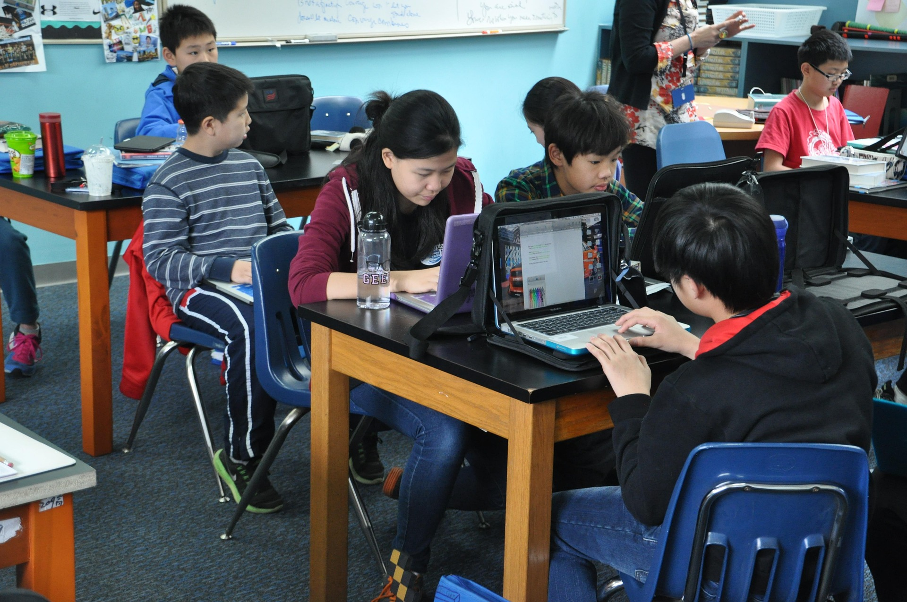
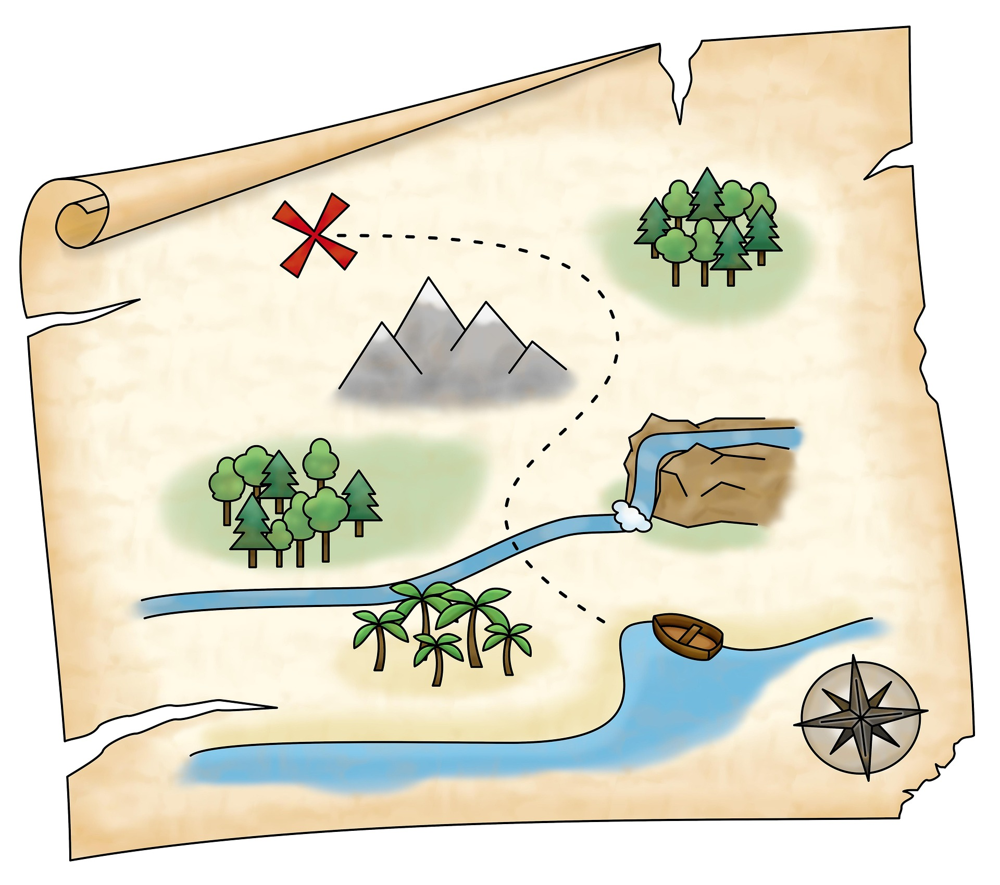
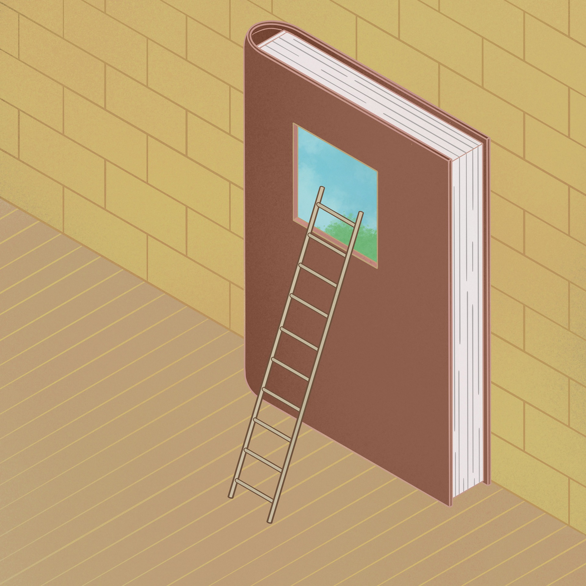
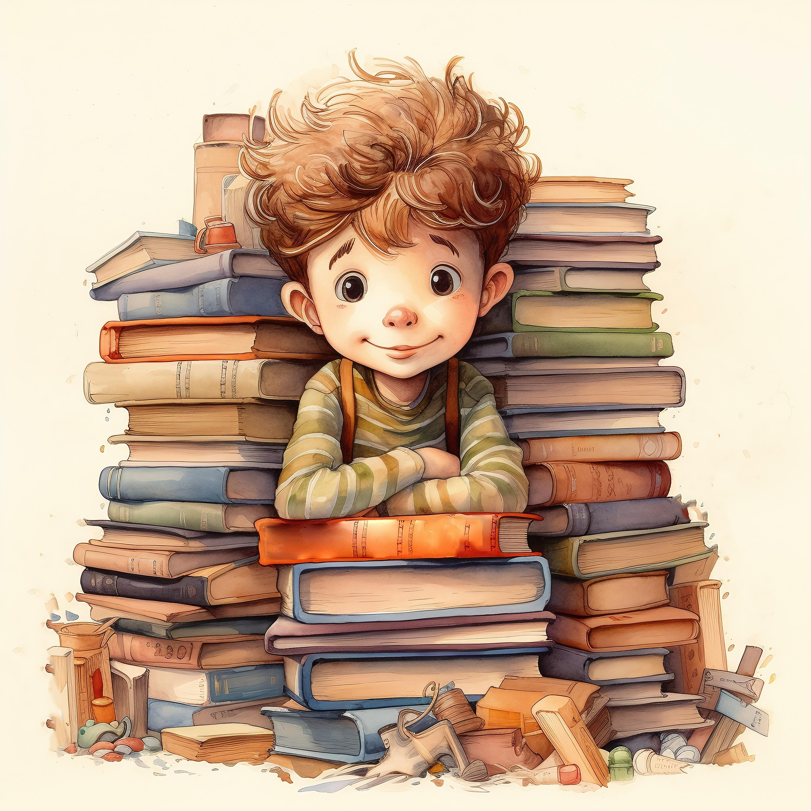
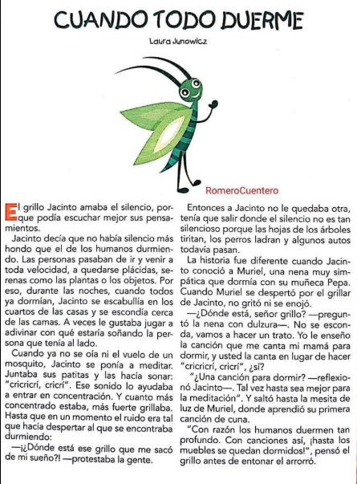

Curso de comprensión Lectora
Curso de Comprensión Lectora Grado séptimo: Leo, comprendo y creo
Curso: Leo, comprendo y creo

Autores: Ana Carolina Tobón
John Mario Escalante Gómez.
Orientaciones Pedagógicas del curso
¡Bienvenido(a) a Leo, comprendo y creo!
En este curso descubrirás que leer es una aventura para aprender, imaginar y expresar tus ideas. A través de actividades interactivas, juegos, lecturas y retos, fortalecerás tu comprensión lectora mientras avanzas por cada una de las secciones. Participa con entusiasmo, sigue las indicaciones y disfruta de cada desafío.
¿Cómo trabajar en el curso?

Sigue las secciones en el orden propuesto.
Lee con atención las instrucciones de cada actividad.
Participa en los juegos y recursos interactivos.
Completa las actividades antes de continuar.
Al finalizar cada sección, reflexiona sobre lo aprendido.
¿Qué encontrarás?
📖 Lecturas interesantes.
🎥 Videos cortos.
🎮 Juegos interactivos.
📝 Retos de comprensión lectora.
💡 Actividades para crear y compartir tus ideas.
¡Prepárate para comenzar esta aventura y convertirte en un gran lector!
Sección 1 ¡Comienza la Aventura!
Sección 1. ¡Comienza la aventura!
¡Bienvenido(a)!
Sección 1. ¡Comienza la aventura!
Objetivo
Reconocer los conocimientos previos de los estudiantes sobre la comprensión lectora mediante actividades interactivas que les permitan identificar sus fortalezas y aspectos por mejorar, despertando el interés por la lectura como una herramienta para aprender, interpretar y comunicar ideas.
Duración: 2 horas.
Modalidad: Individual.
Inicio:
¡Nos alegra que estés aquí!
Te damos la bienvenida al curso "Leo, comprendo y creo", un espacio diseñado para ayudarte a descubrir que leer es mucho más que pronunciar palabras. Durante este recorrido aprenderás a comprender textos, resolver desafíos, expresar tus ideas y desarrollar estrategias que te convertirán en un mejor lector.
En esta primera sección conocerás cómo será el curso y descubrirás cuál es tu punto de partida. No te preocupes si alguna actividad resulta difícil; cada reto te ayudará a aprender algo nuevo.
Antes de comenzar, sigue estos pasos:
a. Lee con atención cada instrucción.
b. Realiza las actividades en el orden indicado.
c. Participa en todos los juegos y retos.
d. Avanza a la siguiente actividad únicamente cuando hayas terminado la anterior.
¡Comencemos esta aventura!
Desarrollo
🎬 Paso 1. Observa y reflexiona
Para iniciar, observa el video "La importancia de la comprensión lectora".
Mientras lo ves, presta atención a las ideas principales y piensa en la siguiente pregunta:
¿Por qué crees que comprender lo que lees puede ayudarte en la escuela y en la vida cotidiana?
Cuando termines, escribe una respuesta breve utilizando tus propias palabras.
📝 Paso 2. Descubre tu punto de partida
Ahora realizarás una prueba diagnóstica.
Esta actividad no tiene calificación. Su propósito es conocer qué sabes sobre comprensión lectora antes de comenzar el curso.
Lee cuidadosamente cada pregunta y responde con tranquilidad. Si alguna respuesta no es correcta, no te preocupes; durante el curso aprenderás nuevas estrategias para mejorar.
🎮 Paso 3. Aprende jugando
¡Es momento de jugar!
Ingresa al recurso interactivo y responde cada reto.
Reto 1 Juego de ahorcado
Encontrarás preguntas, imágenes y pequeños desafíos relacionados con la lectura. Lee con atención antes de responder y procura obtener el mayor puntaje posible.
Recuerda que aprender también puede ser divertido.
Reto 2 Da clic en este enlace de Recurso Interactivo
☁️ Paso 4. Descubre nuevas palabras
Observa la nube de palabras.
Lee cada término y piensa cuál puede estar relacionado con la comprensión lectora.
Después responde:
¿Qué palabras conocías?
¿Cuáles son nuevas para ti?
¿Cuál crees que será la más importante durante este curso?
Escribe una pequeña reflexión de tres o cuatro líneas.
📖 Paso 5. Leemos nuestro primer texto

Ha llegado el momento de leer.
Lee atentamente el poema que encontrarás a continuación.
No tengas prisa. Si es necesario, vuelve a leer algunas partes para comprender mejor la historia.
Mientras lees, identifica:
los personajes; el lugar donde ocurre la historia; el problema principal; la forma en que termina el relato.
Al finalizar, organiza la información en el esquema que aparece al final de la página.
El poema: La higuera
Porque es áspera y fea,
porque todas sus ramas son grises,
yo le tengo piedad a la higuera.
En mi huerta hay diez árboles,
alegres y bellos,
con flores y frutos.
El manzano se cree rey,
el naranjo inunda de perfume el ambiente...
Y ella, tan muda,
ni siquiera tiene un aroma
para enloquecer a las abejas.
Pobre higuera,
si hasta es casi un desaire
verla en mi huerta al lado de los otros.
Pero un día,
corté una ramita y la miré de cerca:
¡tenía un brote tierno y una esperanza!
Entonces supe que ella guarda por dentro
la dulce miel secreta de su asombro,
y que es bella por dentro,
aunque por fuera sea áspera y fea.
Responda las siguientes preguntas, teniendo en cuenta el poema
1. Nivel Literal (Información explícita en el texto)
Pregunta: ¿Cómo describe la autora el aspecto físico de la higuera y qué otros árboles menciona que están a su alrededor en la quinta?
2. Nivel Inferencial (Deducción a partir de pistas del texto)
Pregunta: ¿Por qué razón la poetisa decide decirle a la higuera que es «el más bello de los árboles del huerto» a pesar de que su apariencia es distinta a la de los demás?
3. Nivel Crítico (Reflexión y valoración personal)
Pregunta: Más allá de la naturaleza, ¿Qué mensaje o enseñanza crees que nos deja el poema respecto a cómo tratamos a las personas que consideramos diferentes o que no encajan en los estándares de belleza o éxito de la sociedad
✅ Paso 6. Comprueba lo aprendido
Para terminar esta sección, responde el cuestionario interactivo.
Al finalizar conocerás tus resultados y recibirás una retroalimentación que te permitirá identificar aquello que ya haces bien y aquello que podrás seguir fortaleciendo durante el curso.
Haz clic en el siguiente enunciado:
!Midamos nuestros conocimientos! Das clic acá !!!!
Actividad Práctica:
Cierre
🌱 Reflexiona sobre tu aprendizaje
Antes de continuar con la siguiente sección, dedica unos minutos a pensar en tu experiencia.
Responde las siguientes preguntas:

¿Qué actividad disfrutaste más?
¿Qué aprendiste hoy sobre la comprensión lectora?
¿Qué estrategia utilizarás para comprender mejor los textos que leerás más adelante?
¡Felicitaciones!
Has completado la primera misión. Ahora estás listo para continuar el recorrido y seguir fortaleciendo tus habilidades como lector.
Sección 2: Descifrando los meensajes
Sección 2. 🔎 Descifrando los mensajes
Objetivo de la sección:
Fortalecer la comprensión literal e inferencial mediante estrategias que permitan al estudiante identificar información relevante, establecer relaciones entre las ideas de un texto y descubrir información que no aparece expresamente escrita.
Duración: 2 horas y 30 minutos
Modalidad: Individual y colaborativa
🟢 INICIO
¡Las pistas están dentro del texto!
¡Bienvenido a la segunda misión!
En la primera sección descubriste cómo está tu comprensión lectora. Ahora comenzarás a desarrollar nuevas estrategias para comprender mejor lo que lees.
Recuerda que un buen lector no solamente encuentra respuestas en el texto: también relaciona las pistas, piensa y descubre nuevos significados.
Para esta misión necesitarás leer con atención, observar las pistas y pensar antes de responder.
¿Estás preparado? ¡Comencemos!
Antes de empezar...
Observa el título y la imagen del texto que encontrarás a continuación.
Sin leer todavía el texto, responde:
¿De qué crees que tratará la historia?
Escribe una pequeña predicción. Al finalizar la lectura podrás comprobar si acertaste.
🟡 DESARROLLO
📖 Actividad 1. Encuentra las pistas
Objetivo
Identificar información explícita y reconocer las ideas más importantes de un texto.
¡Comienza a leer!
Encontrarás un cuento corto o texto narrativo, preferiblemente de una extensión aproximada de 300 a 400 palabras.
Lee tranquilamente. Si una parte no queda clara, puedes volver a leerla.
Mientras lees, intenta descubrir:
- ¿Quiénes participan?
- ¿Dónde ocurre la historia?
- ¿Qué sucede?
- ¿Cuál es el problema?

¿Cómo se soluciona?
Ahora demuestra lo que comprendiste
Realiza un ejercicio interactivo de relacionar columnas o arrastrar y soltar.
Deberás relacionar cada elemento de la historia con la información correspondiente.
Recurso educativo Educaplay : Da Clic
Al finalizar, revisa la retroalimentación y vuelve al texto si alguna respuesta necesita ser corregida.
🧠 Actividad 2. ¿Qué quiso decir el texto?
Objetivo
Realizar inferencias a partir de la información proporcionada por el texto.
Ahora viene un reto diferente.
Algunas respuestas no aparecen directamente en el texto. Para encontrarlas tendrás que unir varias pistas y pensar qué quiere decir el autor.
Lee nuevamente algunos fragmentos seleccionados y responde preguntas como:
- ¿Por qué crees que el personaje tomó esa decisión?
- ¿Qué pudo haber sucedido antes?
- ¿Qué podemos deducir de esta situación?
No basta con elegir una respuesta. Busca en el texto la pista que te ayudó a llegar a esa conclusión.
🎮 ¡Pon a prueba tus inferencias!
Realiza un juego interactivo de preguntas.
Puedes utilizar:
Educaplay.
Wordwall.
H5P dentro de eXeLearning.
Cada respuesta debe estar acompañada de una breve explicación cuando sea posible.
Recuerda
Inferir significa descubrir algo que el texto no dice directamente utilizando las pistas que nos proporciona.
🧩 Actividad 3. Construye el significado
Objetivo
Organizar la información y demostrar la comprensión global del texto.
¡Último reto de esta misión!
Ahora vas a reconstruir lo que comprendiste.
Completa un organizador gráfico interactivo con:
Título → idea principal → ideas secundarias → personajes → problema → solución → enseñanza.
Después, organiza cuatro o cinco acontecimientos de la historia en el orden en que sucedieron.
🎯 Reto final
Cuando termines, responde:
¿Cuál es el mensaje principal del texto?
Escribe tu respuesta en dos o tres líneas y explica brevemente qué parte de la lectura te ayudó a descubrirlo.
Recurso sugerido: actividad de ordenar secuencias en Educaplay o H5P y un organizador elaborado directamente en eXeLearning.
🔵 CIERRE Y EVALUACIÓN
✅ ¿Cómo avanzaste en esta misión?
Realiza un pequeño quiz de cierre de 5 preguntas.
Las preguntas estarán relacionadas con:
información explícita;
idea principal;
inferencias;
secuencia de acontecimientos;
mensaje del texto.
La actividad proporcionará retroalimentación inmediata, para que puedas reconocer qué aprendiste y qué necesitas seguir practicando.
🌱 Reflexiono sobre mi aprendizaje
Antes de continuar con la siguiente misión, responde:
1. ¿Qué estrategia me ayudó a comprender mejor el texto?
2. ¿Fue fácil encontrar información que no estaba escrita directamente? ¿Por qué?
3. ¿Qué puedo hacer la próxima vez para comprender mejor una lectura?
⭐ ¡Misión cumplida!
Ya aprendiste que comprender un texto implica buscar información, relacionar pistas, hacer inferencias y construir significados.
En la siguiente sección continuarás avanzando para convertirte en un lector capaz de analizar y expresar sus propias opiniones sobre lo que lee.
Sección 3: !Conviértete en un lector experto!
SECCIÓN 3. 🧠 ¡Conviértete en un lector experto!
Objetivo:
Fortalecer de manera integrada los niveles literal, inferencial y crítico de la comprensión lectora, mediante la aplicación de estrategias de lectura, análisis, interpretación y argumentación en textos breves y cercanos a los intereses de los estudiantes.
Duración: 3 horas
Modalidad: Individual y colaborativa
🟢 INICIO
¡Llegó el gran reto!
¡Has avanzado mucho en este recorrido!
Ya aprendiste a encontrar información, descubrir pistas y comprender aquello que los textos quieren comunicar. Ahora tendrás que poner en práctica todo lo aprendido.
En esta misión encontrarás tres desafíos. En cada uno tendrás que demostrar diferentes habilidades como lector.
Lee con calma, piensa antes de responder y, sobre todo, recuerda las estrategias que has aprendido.
🔍 Antes de comenzar
Observa el título y la imagen del texto que vas a leer.
El Gigante Egoísta
¿De qué crees que tratará?
Escribe una predicción y guárdala. Al finalizar podrás comprobar si tu interpretación inicial era correcta.
Haz clic en el siguiente texto narrativo
🟡 DESARROLLO
📖 ACTIVIDAD 1. Encuentra, relaciona y comprende
Nivel: comprensión literal
Objetivo: Identificar información explícita, ideas principales y detalles relevantes.
¡Comienza el primer desafío!
Lee un texto breve, preferiblemente narrativo o informativo , de aproximadamente 300 palabras.
Texto narrativo
Esta vez tendrás que convertirte en un detective de la información.
Mientras lees, busca las respuestas a estas preguntas:
¿Quiénes participan?
¿Dónde ocurre?
¿Qué sucede?
¿Cuál es la idea principal?
¿Qué información importante aparece en el texto?
Haz clic en la siguiente historia fabulosa ". El aprendiz y la rebelión de los muebles"
🎮 Reto interactivo
Después de leer, realiza un juego de selección múltiple y relacionar columnas.
Por ejemplo:
Personaje → característica
Lugar → acontecimiento
Idea principal → información que la explica
Problema → solución
Enlace de ubicación del siguiente reto:
🔎 Comprueba
Si tienes una respuesta incorrecta, vuelve al texto y busca nuevamente la información.
Recuerda: un buen lector sabe regresar al texto cuando necesita comprobar una respuesta.
🧩 ACTIVIDAD 2. Descubre lo que el texto no dice
Nivel: comprensión inferencial
Objetivo: Desarrollar la capacidad para interpretar información implícita y establecer relaciones entre diferentes elementos del texto. Ahora comienza un desafío diferente.
En esta actividad encontrarás preguntas cuya respuesta no aparece directamente escrita.
Para responder tendrás que utilizar las pistas que encontraste durante la lectura.
El último mensaje de las 11:11
Mateo miró la pantalla de su teléfono por décima vez en cinco minutos. La batería marcaba el 2% y el icono de la señal parpadeaba débilmente. Fuera de la vieja cabaña, el viento rugía con tanta fuerza que hacía crujir las vigas del techo, y un torrente de agua golpeaba los cristales.
Su mochila seguía empapada junto a la puerta, justo donde la había soltado al entrar corriendo. En la mesa de madera, una vela consumida a la mitad era la única fuente de luz, proyectando sombras alargadas que bailaban en las paredes de troncos. Mateo abrió la aplicación de mensajería. El último texto enviado a su padre decía: "El sendero del norte está bloqueado por el barro, voy a refugiarme donde guardan las herramientas". El mensaje mostraba un solo tic gris. No había doble check, ni rastro del color azul.
De pronto, un crujido seco resonó en el exterior, seguido por el sonido metálico de algo pesado golpeando el suelo. Mateo se tensó. Sopló la vela para apagarla, quedándose a oscuras, y se deslizó sigilosamente hasta el suelo, pegando la espalda contra la pared, justo debajo de la ventana trasera. Desbloqueó el móvil una última vez. La pantalla iluminó su rostro asustado un segundo antes de apagarse por completo. En el silencio de la habitación, solo interrumpido por la tormenta, escuchó unos pasos lentos y pesados que arrastraban hojas húmedas justo al otro lado de la puerta de madera.
🕵️ Reto del detective
Lee nuevamente algunos fragmentos y responde:
¿Por qué crees que ocurrió esto?
¿Qué pudo haber sucedido antes?
¿Qué podemos deducir de las acciones del personaje?
¿Qué podría suceder después?
Después de cada respuesta, selecciona la pista del texto que te ayudó a llegar a esa conclusión.
💡 Recuerda
Inferir es descubrir algo que el texto no dice directamente, utilizando las pistas que nos proporciona.
💬 ACTIVIDAD 3. Pienso, analizo y doy mi opinión
Nivel: comprensión crítica
Objetivo: Desarrollar la capacidad para analizar el contenido de un texto, reconocer diferentes puntos de vista y expresar opiniones sustentadas.
¡Llegamos al último desafío!
Ahora no solamente tendrás que comprender lo que dice el texto. Tendrás que pensar sobre lo que dice.
Haz Clic Texto "Mi celular y yo"
🧠 Reto 1. ¿Qué piensa el autor?
Selecciona la opción que mejor explique:
¿Cuál es la intención del autor?
Después identifica una frase o idea del texto que respalde tu respuesta.
⚖️ Reto 2. ¿Estás de acuerdo?
Ahora responde:
¿Estás de acuerdo con la posición presentada en el texto?
Selecciona:
Sí / No / Parcialmente
Pero hay una condición:
Debes explicar por qué.
Tu respuesta debe incluir una idea del texto que ayude a justificar tu opinión.
✍️ Reto 3. Defiende tu opinión
Escribe entre 3 y 5 líneas respondiendo:
¿Qué enseñanza deja el texto y cómo podría aplicarse en nuestra vida cotidiana?
Después puedes compartir tu respuesta con un compañero.
El compañero deberá identificar:
✅ Una idea clara.
✅ Una razón que la apoye.
✅ Una relación con el texto.
🔵 CIERRE Y EVALUACIÓN
🏆 El gran reto final
¡Llegaste al final de la misión!
Ahora realizarás una evaluación integradora de comprensión lectora.
La prueba tendrá preguntas de los tres niveles:
🟢 Literal
¿Qué dice el texto?
🟡 Inferencial
🟢 Crítico ¿Qué puedo descubrir a partir del texto?
Haz clic en el siguiente enlace:
Evaluación Final: Mucha suerte!!!!!
Obra publicada con Licencia Creative Commons Reconocimiento Compartir igual 4.0